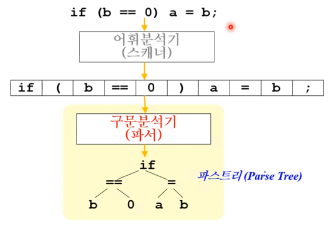
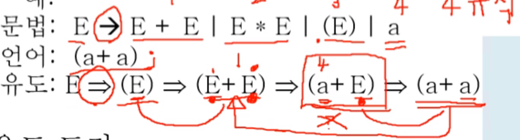
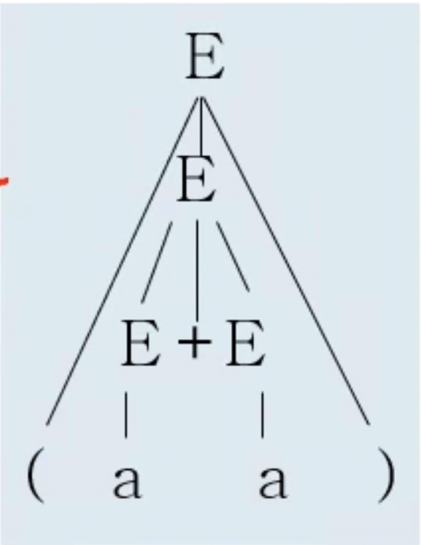
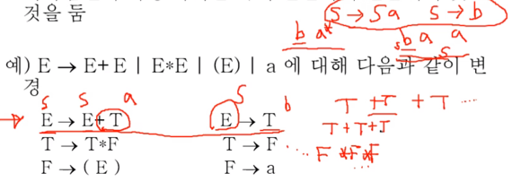
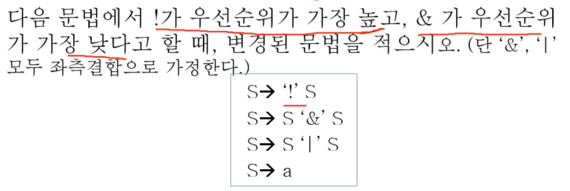
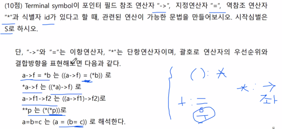
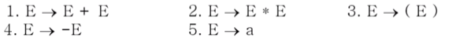
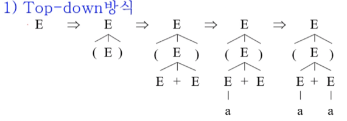
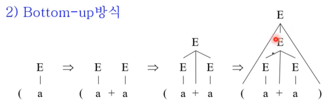
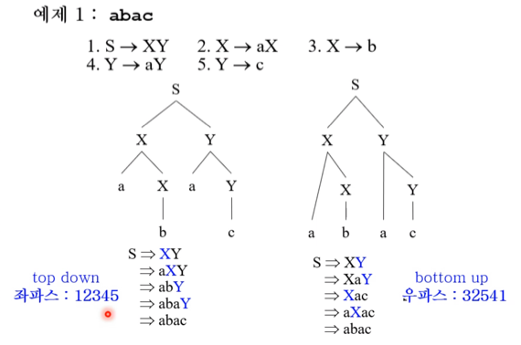

충남대학교 컴퓨터공학과 조은선 교수님의 "컴파일러 개론" 강의를 필기한 내용입니다.
다소 잘못된 내용과 구어적 표현 이 포함되어 있을 수 있습니다.
구문분석 (Syntax Analysis & Parser)

- 토큰들을 저렇게 구조에 따라 Parse tree로 구조화시키는 것으로 생각할 수 있음
- 주어진 문장이 정의된 문법에 따라 생성될 수 있는지를 판별하는 과정
- 올바른 문장에 대해서는 Parse tree가 나오게 되고 틀린 문장에 대해서는 오류가 나오게 된다
Describing Syntax
CFG
- 프로그래밍 언어 개론에서 배운 Context Free Grammar(CFG) 를 이용하여 구문을 기술함
- CFG 는 아래의 4가지로 구성됨
- N(Non-terminal) - 치환될 수 있는 기호
- 보통 알파벳 대문자나 <stmt> 처럼 <>를 이용해 N이라는 것을 표시
- 터미널 혹은 다른 논터미널의 집합이라고 생각하면 될거같다
- 프언개에서 경유지라는 비유가 딱 맞는듯 - 걍 중간과정인셈
- T(Terminal) : 토큰이랑 비슷하다고 생각해도 됨(컴파일러에서 토큰이라 부르는 걸 계산이론에서 터미널이라 부르더라) - 치환될 수 없는 기호
- 작은따옴표나 큰따옴표를 이용해 T라는 것을 표기
- 이것도 프언개에서 종착지라는 비유가 잘 맞다 - 최종 결과를 이루는 요소인 셈
- P : 생성(치환) 규칙 집합
- 왼쪽 → 오른쪽 : 왼쪽은 오른쪽으로 치환될 수 있음
- 어떤 N이 여러 T들로 치환될 수 있다면 | 를 써서 표현할 수 있음
- 예를들어 A → ‘0’, A → ‘1’이라면 A → ‘0’ | ‘1’이 되는 것
- S : 시작 심볼
- N(Non-terminal) - 치환될 수 있는 기호
- 그리고 L(G) 를 이 CFG로 생성될 수 있는 모든 문자열의 집합 - 즉, 이 문법을 따르는 언어가 되는 것
- CFG에는 →, <>, | 정도의 기호밖에 없다 : 이 외의 기호들은 다 그냥 터미널이라 생각하면 됨 - +, - 같은 기호들 걍 다 터미널이다
- S → a | aS 는 정규식에서 a+ 와 같고
- S → e | aS 는 정규식에서 a * 와 같다는거 외워노라(여기서 e는 empty)
BNF
- Backus-Naur Form(BNF) CFG의 문법을 간소화한 것
- 논터미널을 <> 기호로 표시, → 대신 ::= 기호 사용, 걍 문자열은 터미널
- 그리고 BNF에서 확장된 Extended BNF 라는게 있는데
- 이건 논터미널 ::= {뭐시기}숫자 형태가 추가된 것이다 - 뭐시기가 숫자만큼 반복된다는 의미를 가지고 있음
- 기존의 CFG나 BNF에서는 반복을 표현하기 위해 재귀적으로 정의하는 방법 말고는 없었는데 EBNF에서 재귀적인 방법 말고 반복을 표현할 수 있는 방법이 추가된것
- 그리고 java를 기반으로하고있는 ANTLR도 EBNF를 사용하는데 여기서는 * 나 +같은 정규식의 문법도 사용 가능하다
Determine Syntax
- 문법에서 언어를 유도해 내는 것을 Derivation(유도) 라고 하고
- 어떤 문자열이 유도되는지를 확인하면 그 언어를 따르는 것이라 생각할 수 있음
Derivation

- 위 그림을 쭉 읽어보면 이해가 될건데 주의할 점은
- derive는 반드시 한번에 하나의 N만 치환해야된다는 점 - 프언개에서 배운거처럼 모호성이라는 것이 존재하기 때문
- 논 터미널이 여러개일때 치환하는 방법이 두가지 있다
- Rightmost derivation : 오른쪽부터 유도
- Leftmost derivation : 왼쪽부터 유도
- 유도의 방법이 중요한 이유는 모호한 문법의 경우에는 유도의 방법에 따라 다른 트리가 만들어지기 때문
- 논 터미널이 여러개일때 치환하는 방법이 두가지 있다
- 그리고 문법에는 ->를 사용했지만 유도할때는 => 를 사용한다는 점이다
Derivation tree
- 그리고 이 유도를 추상화시켜서 그린 트리를 Derivation tree라고 한다

- 유도의 과정을 추상화시켰다는 것은 이 유도의 순서가 트리에는 나타나지 않는 다는 것을 의미한다고 볼 수 있다
Ambiguous
- 일단 Ambiguous(문법의 모호성) 이라는 것은 어떤 문자열을 유도해내는 유도 트리가 여러개 존재할 경우 문법이 모호하다라고 한다
- 모호성을 해결하는 방법은 결과는 같지만 다르게 기술된 문법을 사용하는 것이다
- 즉, S -> a == S -> A, A -> a인 것을 이용
1. 연산자 우선순위 도입
- 이게 뭐냐면
- 일단 연산자마다 새로운 Non-terminal을 도입하고
- Recursion을 Left나 Right중에 하나에만 두고
- 시작심벌과 가까운 쪽에 연산자 우선순위가 낮은 거를 둔다라

- 여기 예시 있다
- 보면 우선순위가 가장 높은 터미널과 괄호가 가장 멀리 떨어져 있는 것을 볼 수 있고 그다음은 *, 마지막으로 +가 가장 가까이 있는것을 볼 수 있음
- 그리고 +의 경우에 T가 도입되었고 * 의 경우에는 F가 도입됨
- 또한 T와 F가 도입됨에 따라 Recursive Nonterminal이 연산자의 왼쪽이나 오른쪽에만 도입되어 있는 것을 확인할 수 있다
- 마지막으로 E와 T, F를 연결해주는 E → T, T → F까지 만들어주면 완성
- 이 예시와 ba*, S → Sa | b 세개 연관지어서 기억하시길 - 뭔가 시험에 나올삘이다 이거야
2. 결합법칙 도입
- 모든 연산자는 좌측 혹은 우측 결합이거나 아니면 결합법칙이 성립하지 않는다는 특성이 있다(모든 연산자가 셋중에 하나를 만족하는 것)
- 일례로 a + b + c의 경우에는 (a + b) + c의 좌측 결합법칙이 적용된다
- 그리고 C언어 등에서 지원하는 x = y = 3의 경우에는 y에 우선 3을 할당하고 그 결과인 3을 x에 할당하는 식으로 진행되어 x = (y = 3)의 우측 결합법칙이 적용된다
- 1 < 2 < 3의 경우에는 < 연산자의 경우 결과가 boolean으로 나오기 때문에 어떤 결합법칙도 성립하지 않는다는 특징이 있다
- 문법을 구상하는 데에도 recursion의 위치를 이용해 결합법칙을 강제할 수 있다
- 예를 들어, A → Ab | b처럼 Left recursion를 넣어 좌측 결합법칙이 되게 할 수 있고
- A → bA | b처럼 Right recursion을 넣어 우측 결합법칙이 되게 할 수 있다
- 왜냐하면 우측 결합인 경우 A가 준비되고 b를 앞에 붙이는 것이기 때문에 A가 먼저 연산되게 되는 것
- 뭐라는거야


- 이런 문제들 좀 여러번 풀어보면서 감좀 익혀야할듯
Parsing
문장구조를 나타내기 위한 자료구조
- Parse tree : derive tree와 같은 모양이 된다
- root node는 start symbol
- mid node는 non-terminal
- leaf node는 terminal에 대응되는거다 이거야
- 생성규칙 번호 리스트 : 유도하는 과정에서 사용된 생성(치환) 규칙들을 사용 순서에 따라 리스트로 나열한 것
- 생성규칙은 이미 다 만들어져있으므로 이 번호 리스트만 있어도 트리 구성이 가능함(+ 좌우 결합에 대한 정보까지)
- 장점은 리스트만 저장해놓고 트리는 필요할때 만들어도 되기 때문에 저장공간이 비교적 적게 필요하다는점
- 하지만 단점은 리스트를 이용해 트리를 재구성해야되기 때문에 그만큼의 오버헤드가 들어간다는 점이다
유도 vs 구문분석
- 유도는 생성규칙에 따라 문자열을 만들어내는 과정인 반면에
- 구문분석은 문자열와 생성규칙을 이용해 root를 찾아내는 역연산이라고 할 수 있다
Top-down vs Bottom-up
- 아래의 예시 꼭 기억하랜다

Top-down

- 이 방식은 유도의 과정을 이용하는 것이다
- 컴퓨터는 모든 경우의 수를 시도해볼 수 있는 빠르기를 가지므로 모든 유도의 경우의 수를 다 해보고 매치되는게 없으면 빠꾸치고 매치되면 그것으로 반환하는 방법
- 하지만 생성규칙이 아주 많은 언어의 경우에는 모든 경우의 수를 해보는 것이 아주 오래 걸릴 수도 있다는 단점이 있다
- top-down의 경우에는 좌측 유도 중 적용된 생성규칙 리스트(좌파스) 와 같은 리스트가 나오면 트리를 성공적으로 구성하게 된 것이라 할 수 있다
- 위의 예시의 경우에 구문분석이 아니라 좌측유도를 해서 a + a를 만들어낸다면 생성규칙 리스트는 3155가 될 것이다
- 이때의 좌파스는 3155가 되는 것이고 예시의 top-down 구문분석 과정을 보면 좌파스와 동일한 3155인 것을 알 수 있다 - 따라서 제대로 트리가 구성된 것
- bottom-up의 우파스 예시를 보면 이 파스라는게 뭔지 대강 이해가 잡히긴함
Bottom-up

- 위의 예시의 경우에는 대략 다음과 같은 방식으로 진행된다
- ( 가 들어왔을 때에는 일단 아무것도 안함
- a가 들어오면 5번 규칙에 따라 E로 매핑해줌
- 그리고 +가 들어와도 아무것도 못하기 때문에 가만히 있음
- 또 a가 들어오면 5번 규칙에 따라 E로 매핑해줌
- 매핑하고 나니 1번 규칙을 적용할 수 있는 것을 알고 E + E를 E로 매핑해줌
- 마지막으로 )가 들어오면 3번 규칙을 적용할 수 있는 것을 알고 3번을 적용해 트리 구성을 끝냄
- bottom-up의 경우에는 우측유도 중 적용된 생성규칙 리스트의 역순(우파스) 와 같은 리스트가 나오면 트리를 성공적으로 구성하게 된 것이 된다
- 위의 예시의 경우에는 우측유도를 해보면 3155인데 이의 역순은 5513이 되며 이게 우파스가 된다
- 그리고 위의 bottom-up과정을 보면 5513이므로 제대로 트리가 구성된 것이 된다
- 즉, 뭐시기 파스라는 것은 (사람이)유도를 통해 알아낸 정답(구문분석 과정에서는 알 수 없는)이 되는 거고 이 정답을 맞추면 트리가 제대로 구성된 것이 된다 뭐 이런 컨셉인듯
- 우파스는 우측유도과정의 역순인 것에 주의할 것
- 위 두가지 방법 다 장단점이 있기 때문에 둘 다 쓰이는 방식이다
- 대표적으로 yacc에서 bottom-up을 사용하고 ANTLR의 경우에는 top-down을 사용하고 있다

- 이 예시 보고 정신좀 차려라